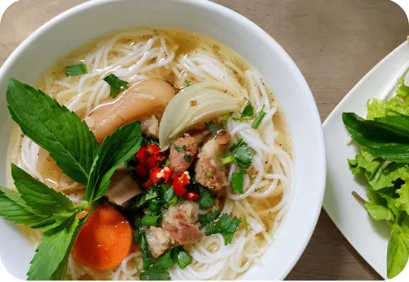
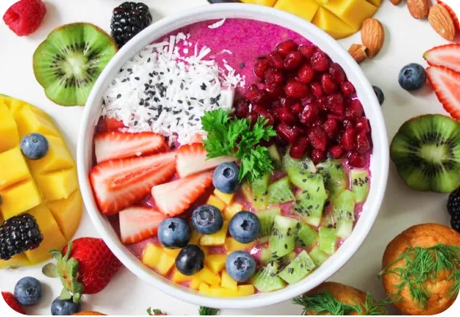
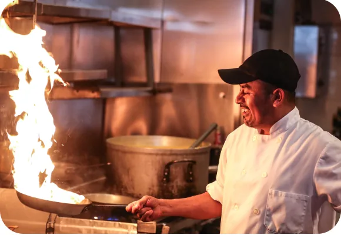
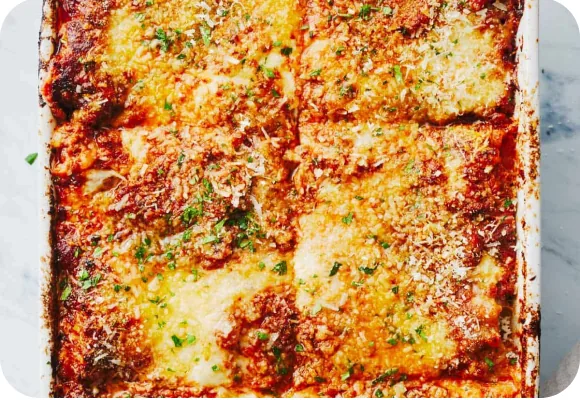
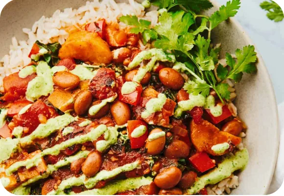

Crochet Projects for Noodle Lovers
A bowl of noodles, a handful of fresh herbs, and a little creativity. Find comforting ideas for your next cozy night in.
Discover kitchen stories, practical cooking tips, and fresh ideas to make every meal a little more special.

A bowl of noodles, a handful of fresh herbs, and a little creativity. Find comforting ideas for your next cozy night in.

Bring more color to your table with seasonal vegetables, hearty grains, and ten satisfying meals worth making again.


Layers of roasted vegetables, rich tomato sauce, and golden cheese make this meat-free lasagna a family favorite.

Sweet plantains meet tender pinto beans in a warming stew, finished with a bright, herby green sauce.
Love food and telling a good story? Help our team share kitchen inspiration and connect with the Foodieland community.